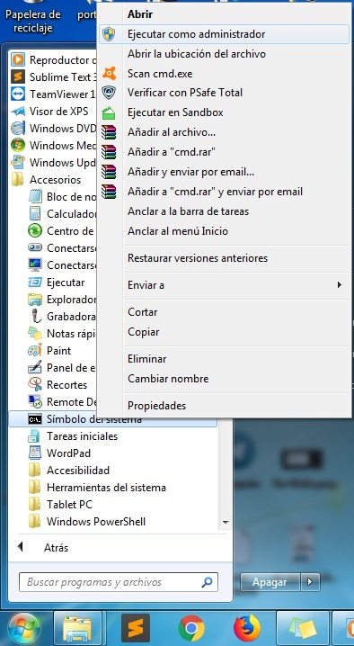
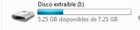
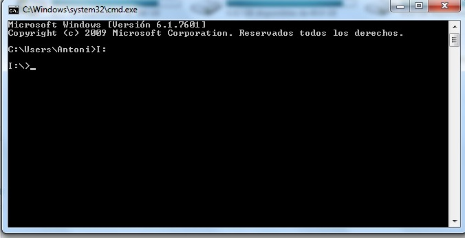
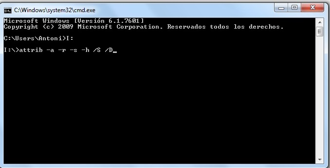
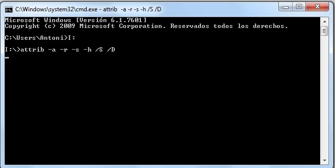
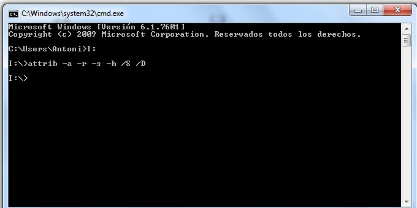

Unos de ls virus que afectan en la actualidad son los que ocultan todos los archivos y sólo muestra accesos directos. A continuación se mostrará los comandos para solventar este inconveniente, paso a paso mediante el sistema operativo Windows 7:
Ejecutar el programa "Simbolo de sistemas". El mismo se encuentra en la carpeta de Accesorios del menú:
Ubicar la letra que proporciona Windows para la unidad que se desea limpiar. en este caso es la letra i.
Una vez abierto el programa "Simbolo de sistemas", precionar la letra de la unidad, seguidamente el simbolo de dos puntos y luego enter. Tal como se muestra en la imagen.
El comando attrib es el que reaiza el trabajo de reaparecer las carpetas ocultas. A continuanción se muestra la imagen de ejemplo:
Esperar hasta que el sistema operativo procese y devuelva el mando, en el prompt de la linea de comandos:
Una vez devuelto el control del prompt, la actividad ha finalizado. Se recomienda borrar los archivos que sean desconocidos, posiblemente son virus.
